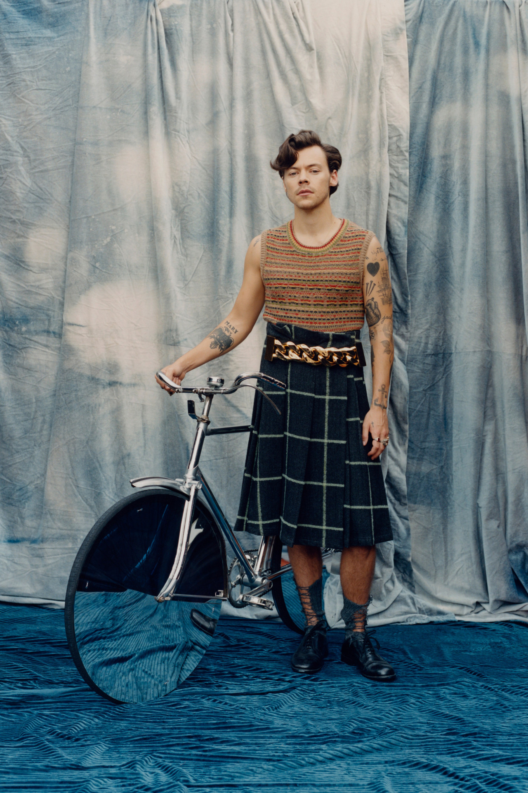
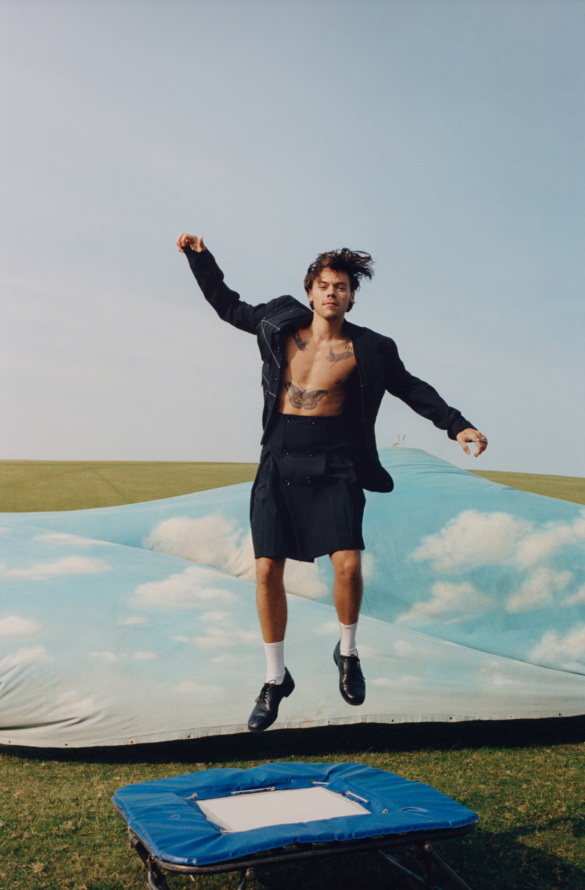
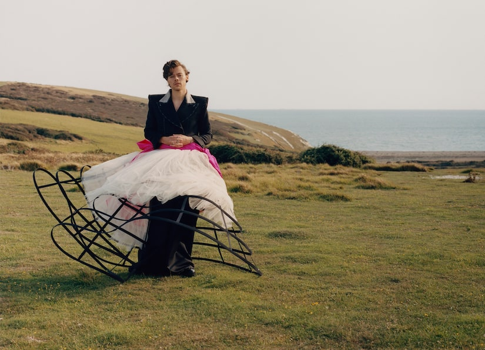
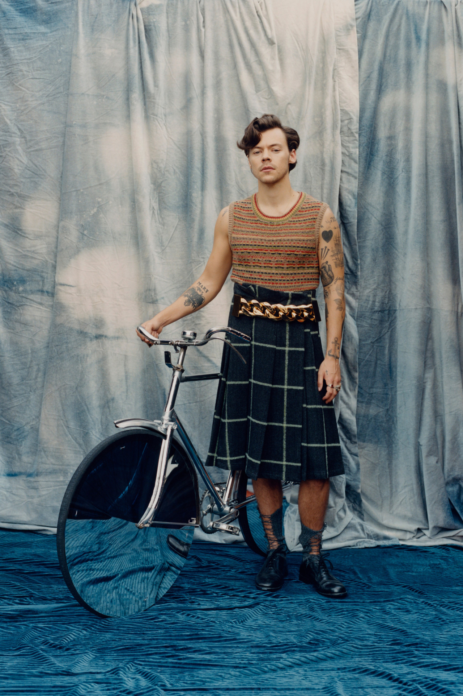
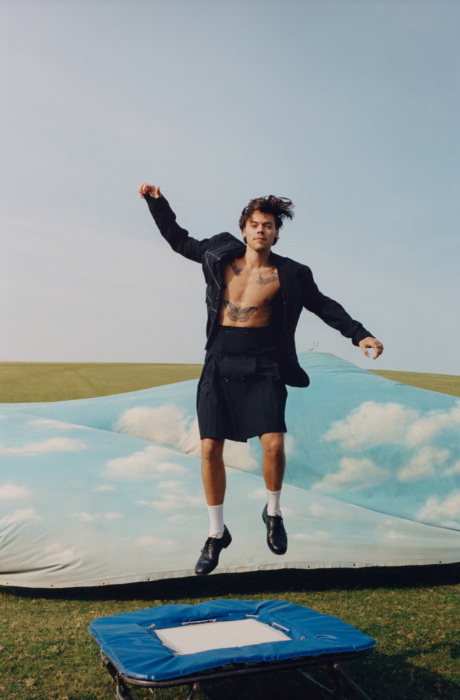
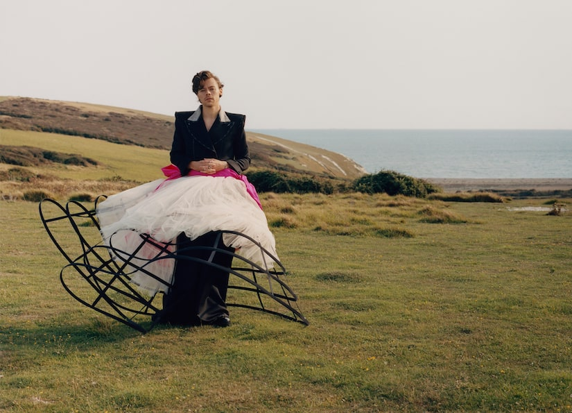

Que vous soyez un fan des 1D, avec le téléphone toujours prêt pour de nouvelles notifications sur le groupe musical, ou que vous soyez tout simplement un observateur occasionnel, vous aurez sans doute remarqué que la couverture de décembre de Vogue d’Harry Styles est un réel choc. Tourné par Tyler Mitchell sur les Sussex Dales, Styles est le premier homme à prendre la tête du magazine, en solo, en 128 ans d’histoire de Vogue. En outre, il est photographié vêtu d’une robe en dentelle bleu pervenche par Gucci, et apparaît à l’intérieur du magazine dans des jupes par Wales Bonner et Comme des Garçons, ainsi que d’une crinoline conçue par Harris Reed.
 




